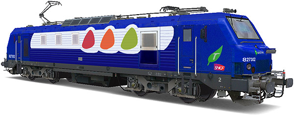
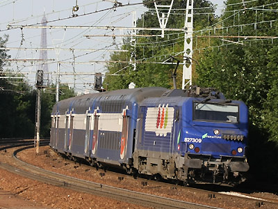
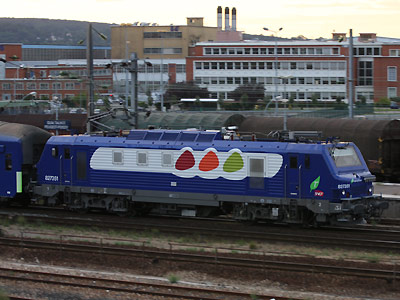
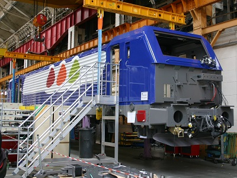
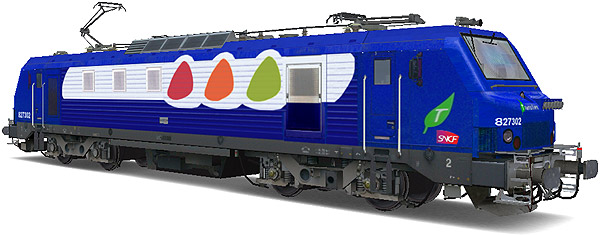

La BB 27300 version 
J.C. Théroanne a réalisé les BB 27302 et 27330 sur la base des BB 27000 de N.Schou et T.Stachnik.
Ferrovia - 28 Mai 2012 - Mise à jour : 18 Juin 2024
BB 27300
Les Prima de Banlieue
Machines dérivées de la "Locomotive Fret" BB 27000. Les 27300 ont pour rôle de faire l'intérim entre l'amortissement des anciennes séries de locomotives utilisées en banlieue (BB 8500, BB 17000, BB 25500) à bout de souffle et celui des rames VB2N qui n'était pas prévu avant de longues années. Puisqu'il est prévu que le matériel tracté sera remplacé par des automotrices, les 27300 sont appelées à reprendre un service dédié au Fret comme leurs grandes soeurs.
Parmi les équipements spécifiques à cette sous-série : ligne de chauffage train, câblots de réversibilité, équipement d'Exploitation à Agent Seul (antennes, moniteurs, commandes de fermetures de portes, signal d'alarme par interphonie), second compresseur pneumatique.
En revanche, les 27300 perdent l'aptitude à la marche en unité multiple des BB 27000.
60 exemplaires ont été livrés de 2006 à 2008, auxquels 7 locomotives supplémentaires ont été ajoutées en 2009 et 2010.
Les 27300 ont alors été engagées sur le réseau Transilien ligne N (Paris-Montparnasse vers Dreux et Mantes-la-Jolie, ainsi que Rambouillet) et sur le réseau J (Paris-St Lazare vers Ermont, Gisors, Mantes-la-Jolie via Conflans ou via Poissy, Vernon). La livraison des Regio2N Z 57000 entraine le retrait du service des machines de la ligne N et l'amortissement des VB2N en octobre 2022. Douze machines sont mutées vers l'activité Infra. Cependant, l'état de santé de Fret SNCF ne permet pas d'envisager la mise au type 27000 de douze autres machines. À la demande d'Ile de France Mobilités, la SNCF a lancé en 2022 une vente aux enchères inédite, remportée par la société de leasing Beacon Rail. Les locomotives vendues sont officiellement radiées des effectifs le 05 décembre 2022 avec des kilométrages compris entre 1,5 et 2 millions de kilomètres, très respectables pour un usage exclusif en banlieue et en comparaison des 4 millions de kilomètres que les BB 8500 et 25500 remplacées avaient parcouru en moyenne sur 40 ans de carrière.
Sur le réseau St Lazare, ce sont les Z 50000 qui ont repris la plupart des services VB2N provoquant le retrait du service de nombreuses BB 27300 en 2022-23. Plusieurs machines sont louées à la région Grand Est au second semestre 2022 afin de pallier dans l'urgence à l'arrêt imprévu de tout le parc de Z 11500. Les 27300 détachées assurent des services Nancy-Metz et Nancy-Strasbourg avec des coupons de VB2N ex-Montparnasse réduits à 4 caisses.
Le reliquat des machines encore en service en banlieue assure la relation Paris-St Lazare - Mantes-la-Jolie via Poissy, là où les VB2N furent engagées pour la première fois 45 ans auparavant. Le retrait complet de VB2N ne sera possible qu'à l'ouverture de l'extension Ouest du RER E, et la desserte de Mantes reprise par les RER NG Z 58000.
Quelques données techniques
Constructeur : Alstom
Tension d'alimentation : continu 1,5 kV et monophasé 25 kV, 50 Hz
Chaîne de traction : onduleurs à transistors IGBT
Motorisation : 2 moteurs 6 FRA 4567 asynchrone à ventilation forcée, suspendus par le nez par bogie
Puissance totale : 4200 kW
Longueur : 19,520 m
Masse : 90t
Pantographes : 2 SX
Pour plus d'info :
La fiche BB 27300 sur Wikipedia
Fiche technique des BB 27300 de Florent Brisou
L'inventaire des BB 27300 sur Trains du Sud-Ouest
Inventaire de la série
Machines Infra : 27302, 03, 06, 07, 09, 11, 13, 15, 17, 19, 21, 22, 41 (AEF)
Machines Beacon Rail : 27301, 04, 05, 08, 12, 14, 16, 18, 20, 23 à 25
Seconde vente aux enchères : 27310, 26 à 39, 42 à 44

La BB 27309 à Sèvres (23/06/2010)

La BB 27351 devant l'usine Peugeot de Poissy (27/09/2008)

Une BB 27300 en cours d'assemblage à Belfort (16/06/2007)
La BB 27300 version 
J.C. Théroanne a réalisé les BB 27302 et 27330 sur la base des BB 27000 de N.Schou et T.Stachnik.
